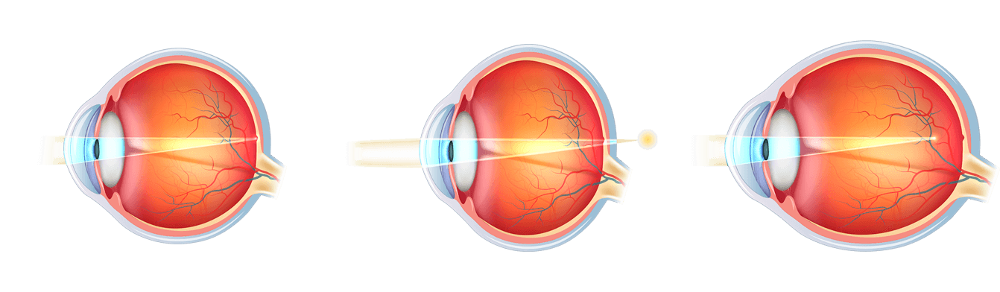
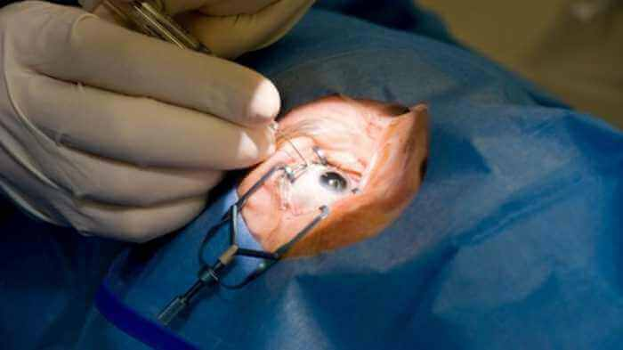

НОВИНИ.МЕДИЦИНА
Лазерната корекция на зрението вече не е необходима
Според статистиката, всеки трети европеец има проблеми със зрението. Според проучване на общественото мнение през 2017г., повечето от тях нямат нищо против да се откажат завинаги от контактните лещи и очилата, но без да прибягват до операция. Днес има възможност това желание да се изпълни!
нормално зрение
късогледство
далекогледство
Операция на очите: какви са последствията
Лазерната корекция на зрението бързо губи скорост. Независимият експерт по офталмология Александър Христов обяснява тази ситуация с честите случаи на отрицателен резултат от операциите за възстановяване на зрението.
“Качествената корекция струва много пари, десет или дори петнадесет пъти повече от жизнения минимум на българите. В търсене на алтернативни лечения, хората търсят бюджетни варианти, които стават по-достъпни в болници с остаряло оборудване.
Статистиката на СЗО съобщава, че около 4 милиона души в нашата страна имат проблеми със зрението. И само 11% от тях могат да си позволят скъпо лечение, което включва лазерната корекция.
Мен ме търсят пациенти, които са загубили зрението си с 5-7 единици след различни операции. За съжаление, в тези случаи вече е невъзможно да се възстанови естественото зрение. До края на живота си тези хора ще бъдат принудени да носят очила с огромни лещи”.
Операцията за възстановяване на зрението не винаги завършва успешно
Народни методи за връщане на зрението
Има много народни методи за възстановяване на зрението. Те включват гимнастика за очите, употреба на големи количества плодове и зеленчуци, богати на витамин А, В1, В2, В12, С и други.
Противно на общоприетото схващане, връщането на зрението по този начин е невъзможно. Причината е, че за да получите необходимия процент витамини от храната, трябва да изядете такова количество пресни продукти наведнъж, че стомахът на човек просто не може да ги побере.
Например, 10 килограма моркови или 15 кг боровинки дневно. В допълнение към това, не всеки витамин се абсорбира, тъй като има редица особености за всеки елемент, които трябва да се спазват, когато се приемат.
Така че, рибофоринът (витамин А) се усвоява зле от пушачите и хората, които пият алкохол, както и при хора с ниска норма в кръвта на витамин Е и цинк. Въпреки това, дори при хора, които водят здравословен начин на живот, витамин А се абсорбира само когато се консумира с достатъчно мазнини.
Самостоятелното приемане на чисти витамини от аптеката обикновено дава обратен ефект и води до хиповитаминоза, която намалява зрението.
 Получаването на достатъчно витамини за
зрението от храната е почти невъзможно
Получаването на достатъчно витамини за
зрението от храната е почти невъзможно
Съвременни методи за възстановяване на очите
Водещите офталмолози в Европа са създали средство, което в близко бъдеще ще замени лазерната корекция. На европейския пазар лекарството е регистрирано под търговското име .
За една година от съществуването си то даде възможност на повече от 100 хиляди души да си свалят очилата и да се откажат завинаги от лещите. Учените са го създавали повече от 7 години. Още 4 години бяха необходими, за да се направят клиничните изследвания.
Безпрецедентната ефективност на лекарството се дължи на състава му, който няма аналози, който включва екстракти от гинко билоба, плодове от боровинки, жълт кантарион и ароматна мартиния.
Важна роля в създаването на капсулите изигра методът на студената водна екстракция, който позволи напълно да се запази биохимичният състав на витамините.
Активните вещества на лекарството могат да повишат нивото на витамините, необходими за зрението, до здравословните стойности за 2-4 седмици. През това време балансът на микроелементите, отговорни за зрението, се изравнява.
Това води до естественото стабилизиране на очното налягане, а също така тонизира мускулите на окото, укрепва ретината и изравнява зрението до единица.

От къде може да се купи ?
Това лекарство няма скоро да се предлага в европейските аптечни вериги. За сега можете да си купите от сайта на официалния доставчик.
13 коментара на читатели
Дъщерята ми го използва редовно. Много е доволна. Лещите вече са в миналото...
Вчера си взех колета с . Доставиха го бързо, всичко е наред. Вече започвам да го пробвам.
Занимавам се с болните си очи, вече втора седмица пия , така че зрението ми НАИСТИНА се подобрява! И много се зарадвах!
Направих поръчка, сега с нетърпение чакам колета :)
Вече от една седмица взимам и зрението ми се подобри от -4 до - 2! Много Ви благодаря!!!!
За един месец минах курса с и зрението ми стана 1! Просто нямам думи!
Използвам го вече цяла седмица и вече има резултати. Зрението ми значително се подобри! Опитвам се да не нося очила.
Успях с това лекарство да подобря зрението си от -5 до -2 за 4 седмици. А искам единица)). Вярно е, че понякога ме мързи и пропускам, или забравям да си вземам хапчето. Все пак трябва да се взема в ръце и да довърша започнатото)
И аз съм същата, винаги забравям да си изпия хапчето. Но въпреки това, зрението ми от се подобри. Беше +1.5, сега е 0.8.
Честитете ми, напълно възстанових зрението си! Не мога да повярвам!!! Вчера се проверих в магазина за очила, зрението ми е ЕДИНИЦА! Съпругът ми също започна да пие a , въпреки че неговото зрение не е толкова лошо, колкото беше моето.
Приятели, надявам се и Вие да имате такова щастие, като моето. Възвърнах зрението си за 12 дни от -2 до 0.8. Благодаря на създателя на лекарството. Късмет на всички!
Леля ми взимаше , току-що завърши курса на лечението. Зрението й от -3,5 се изравни до 1. Дори не мога да изразя с думи, колко се радваме за нея.
Лекарството е супер и най-важното - всичко е просто и бързо. За статията - 6 +++ ;) вчера отидох при очен лекар - той беше шокиран от резултатите.
Благодаря за статията. Както винаги е много полезна. Отивам да поръчам.